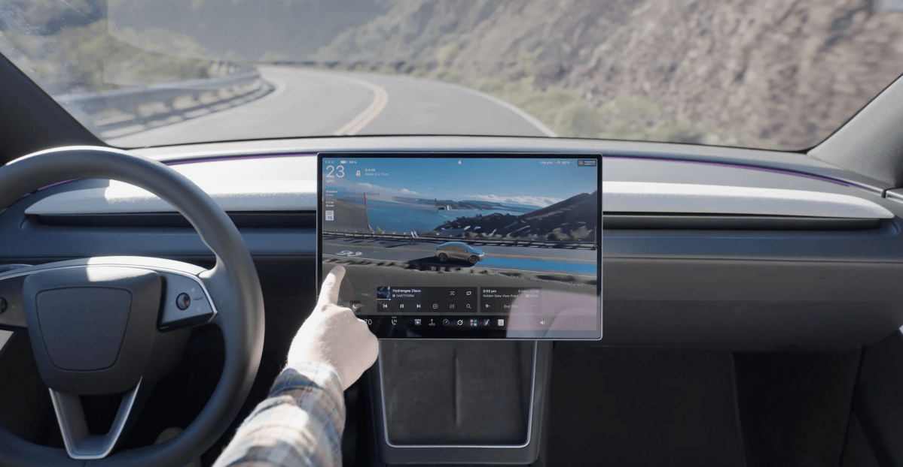

for DC Advanced UX Team.Vivi · Yohan · Libby · Lim Jisu · Katey · Anna
Back Issue

Interaction
Reality View: the road looks like GTA
The center screen no longer draws the road as a wireframe. Reality View, inside FSD v15, shows buildings, crosswalks, pedestrians and the traffic around the car from overhead, live. A tap on that picture changes what the car plans to do next. The rollout started Saturday, and Elon Musk posted "FSD is GTA irl". If the feed is too much, the same screen can fall back to a map, or to a quiet mode with the detail taken out.
中央屏不再用线框画路。FSD v15里的Reality View从上方实时画出建筑、人行横道、行人和周围的车。在这张图上点一下，车下一步的计划就改了。周六开始推送，Elon Musk发了一句“FSD is GTA irl”。画面太满的话，同一块屏可以退回地图，或退到去掉细节的安静模式。
중앙 화면은 더 이상 도로를 와이어프레임으로 그리지 않는다. FSD v15의 리얼리티 뷰는 건물, 횡단보도, 보행자, 주변 차량을 위에서 실시간으로 보여 준다. 그 그림을 탭하면 차가 다음에 하려는 일이 바뀐다. 배포는 토요일에 시작됐고, 일론 머스크는 “FSD is GTA irl”이라고 올렸다. 화면이 과하면 같은 화면을 지도로, 또는 디테일을 뺀 조용한 모드로 내릴 수 있다.
LG's UltraView puts two pictures on the windshield at once. A focus-free AR-HUD holds speed, driver-assist alerts and navigation cues out at the road. The Hover screen, closer, carries navigation, vehicle status, climate and media at a perceived 1.2 meters. Together they cover 25 by 7 degrees from a package of about 15 liters, and the size and density of the picture change with the drive. When the display is off, the glass has no black mask.
LG 울트라뷰는 앞유리에 그림 두 장을 동시에 띄운다. 초점 맞춤이 필요 없는 AR-HUD는 속도, 운전자 보조 경고, 내비게이션 단서를 도로 쪽 먼 거리에 둔다. 더 가까운 호버 화면은 내비게이션, 차량 상태, 공조, 미디어를 체감 1.2미터에 둔다. 둘을 합치면 시야는 25도에 7도이고, 광학 패키지는 약 15리터이며, 그림의 크기와 밀도는 주행에 따라 바뀐다. 디스플레이를 끄면 유리에 검은 마스크가 없다.
Ripplet in Tbilisi wrote its own brief: a puzzle-platformer set in limbo, and a cinematic before any prototype exists. The witch crosses an abandoned desert and finds a tower drawn from M.C. Escher. She is built like a stop-motion puppet, so the environment plays at 30 frames a second and she moves at 12. Cloth had to be simulated on twos and threes. Thirty rough ink boards and a 51-second 2D animatic came before a shot, and 2D effects sit on the 3D so her magic reads as drawn.
트빌리시의 리플릿은 브리프를 스스로 썼다. 림보에 놓인 퍼즐 플랫포머이고, 프로토타입은 아직 없으며, 시네마틱이 먼저다. 위치는 버려진 사막을 건너 M.C. 에셔의 그림에서 온 탑을 만난다. 그녀는 스톱모션 인형처럼 만들어져, 환경은 초당 30프레임으로 가고 그녀는 12프레임으로 움직인다. 천은 투즈와 스리즈로 시뮬레이션해야 했다. 샷 이전에 거친 잉크 보드 서른 장과 51초짜리 2D 애니매틱이 있고, 2D 효과가 3D 위에 앉아 마법이 그려진 것처럼 읽힌다.
Interstate went back to Byron's early years and drew a wordmark from historic blackletter, then set it beside clean contemporary type. The palette is black, white and one signature blue. Seven restaurants had been running seven different identities. Illustration adds warmth, and the photography is documentary: people and the room, not a styled burger. The letters carry the attitude. The rest of the system stays quiet.
인터스테이트는 바이런의 초기로 돌아가 역사적 블랙레터에서 워드마크를 그리고, 그것을 깨끗한 현대 서체 옆에 놓았다. 팔레트는 검정, 흰색, 그리고 시그니처 블루 하나다. 식당 일곱 곳이 서로 다른 아이덴티티 일곱 개로 돌아가고 있었다. 일러스트가 온기를 더하고, 사진은 다큐멘터리다. 사람과 공간이지, 스타일링된 버거가 아니다. 태도는 글자가 지고, 시스템의 나머지는 조용하다.
Akitonko_Chu's VRChat shader turns a hand, a foot, a hat or a cape into a galaxy. One style makes the mesh a window onto space. The other makes the hand look like glass with a universe inside it. Rim light and a normal map give the stars depth without hiding them, and the flat version is still there. Planets or a black hole can sit in that space. The shader is still in progress, and it is not on Booth yet.
아키톤코 추의 VRChat 셰이더는 손, 발, 모자, 망토를 은하로 바꾼다. 한 스타일은 메시를 우주를 내다보는 창으로 만든다. 다른 스타일은 손을 유리처럼 보이게 하고, 그 안에 우주를 넣는다. 림 라이트와 노멀 맵이 별을 가리지 않은 채 깊이를 주고, 평면 버전도 남아 있다. 행성이나 블랙홀을 그 공간에 놓을 수 있다. 셰이더는 아직 진행 중이고, Booth에는 없다.
Figma's agent is now generally available in FigJam and Slides, on every paid plan. It takes connectors and attachments, and can pull Hex, Slack and Asana into a board, a diagram or a deck. A messy FigJam becomes a spec with a summary and next steps. A deck can start from that spec plus a brand template, then split a crowded slide, sharpen the takeaway and draft speaker notes for a named audience. The prompt is the meeting already on the board.
피그마의 에이전트가 이제 모든 유료 플랜의 FigJam과 슬라이드에서 일반 제공된다. 커넥터와 첨부를 받고, Hex, 슬랙, 아사나의 맥락을 보드와 다이어그램과 덱으로 가져올 수 있다. 어지러운 FigJam은 요약과 다음 단계가 있는 스펙이 된다. 덱은 그 스펙과 브랜드 템플릿에서 시작하고, 붐비는 슬라이드를 나누고, 요지를 다듬고, 청중에 맞춘 스피커 노트를 초안한다. 프롬프트는 이미 보드 위에 있는 회의다.
ManvsMachine directed, designed and animated the opening titles for Robinhood's Hood Summit '26, Engines of Creation. A custom explorer ship moves through empty galaxies. The frames stay spare: space, the hull, almost no chrome. Denis Kilty wrote the music and the sound. The sequence played in Houston earlier this fall, and STASH posted it on Monday. Ambition is drawn as distance, not as a dashboard.
ManvsMachine为Robinhood的Hood Summit '26“Engines of Creation”执导、设计和制作了开场片头。一艘定制的探索飞船穿过空的星系。画面留得很干净：太空、船体，几乎没有镀铬。Denis Kilty做了音乐和声音。这支片子今年秋天早些时候在休斯敦播放，STASH周一时把它发了出来。野心被画成距离，而不是一块仪表。
맨즈머신은 로빈후드의 후드 서밋 '26, 엔진스 오브 크리에이션의 오프닝 타이틀을 연출하고 디자인하고 애니메이트했다. 맞춤 설계한 탐사선이 빈 은하를 지난다. 프레임은 절제되어 있다. 우주, 선체, 크롬은 거의 없다. 데니스 킬티가 음악과 사운드를 맡았다. 시퀀스는 이번 가을 초 휴스턴에서 재생됐고, STASH가 월요일에 올렸다. 야심은 대시보드가 아니라 거리로 그려진다.
Casey Roarty designed the poster for the last series of Chicken Shop Date, and the tenth-anniversary identity before it. The title sits in a cursive the color of a chip-shop front, and other pieces use a red that recalls Morley's. The same hand draws chalk and spray-paint marks on sleeves for Oh Wonder and That Woman. For Nola in Peckham the identity stays beige and quiet, close to the cafe's own room, on cards and totes. Minimal, then one loud color.
케이시 로아티는 치킨 숍 데이트 마지막 시즌의 포스터를 그렸고, 그 전에 10주년 아이덴티티도 맡았다. 제목은 치킨집 간판의 노란 필기체이고, 다른 물건은 몰리의 빨강을 떠올리게 하는 빨강을 쓴다. 같은 손이 오 원더와 댓 우먼의 슬리브에 분필과 스프레이 자국을 그린다. 페컴의 놀라는 베이지와 조용함으로 남고, 카페 자신의 방에 가깝게 카드와 토트백 위에 앉는다. 미니멀, 그리고 시끄러운 색 하나.
On the Kia stand at the LA Auto Show, the configurator is a set of physical dials. Each dial carries a high-resolution screen, and the picture on it changes as you move through colors, trims and camera angles. The car on the wall updates as you turn: sunlight, a street or a landscape, with reflections following the paint. A soundtrack moves with the selection. Nearby, cluster themes from Disney, Pixar and Star Wars preview on the instrument display. The show runs through 29 November.
LA 오토쇼의 기아 부스에서 컨피규레이터는 물리 다이얼 한 세트다. 다이얼마다 고해상도 화면이 있고, 색, 트림, 카메라 각도를 넘기면 그 위의 그림이 바뀐다. 벽의 차는 돌리는 대로 갱신된다. 햇빛, 거리, 풍경, 그리고 도장을 따라가는 반사. 사운드트랙도 선택과 함께 움직인다. 옆에서는 디즈니, 픽사, 스타워즈의 클러스터 테마가 계기판에서 미리 보인다. 쇼는 11월 29일까지다.
At IMOS in Tangerang, the Burgman Street's instrument is a 4.2-inch color TFT, the first Ride Connect+ screen on a Suzuki scooter in Indonesia. The phone app puts navigation, incoming calls, message alerts and the weather on that panel. A smart key means the remote can stay in a pocket. The show at ICE BSD runs through 29 November. The display is small, and it is asked to hold the ride and the phone at once.
탕게랑의 IMOS에서 버그만 스트리트의 계기는 4.2인치 컬러 TFT다. 인도네시아 스즈키 스쿠터에 Ride Connect+ 화면이 처음 들어간다. 휴대폰 앱은 내비게이션, 수신 전화, 메시지 알림, 날씨를 그 패널에 올린다. 스마트 키 때문에 리모컨은 주머니에 있어도 된다. ICE BSD의 쇼는 11월 29일까지다. 화면은 작고, 라이딩과 휴대폰을 한꺼번에 담으라고 한다.
Tovie is a seatless floor bike, 16 by 16 by 9.5 inches and 24 pounds, so a chair becomes the saddle. Pedals talk to a phone or tablet over Bluetooth. Parent-picked YouTube plays only while the child pedals, and freezes when the legs stop. A time limit sits with the parent, next to sound, lights and intensity. Games use the same pedals: forward and back steer a yellow submarine. A screen-free mode leaves the resistance and the textured inserts, and nothing else.
토비는 안장 없는 바닥 자전거다. 16 곱하기 16 곱하기 9.5인치, 24파운드라서 의자가 안장이 된다. 페달은 블루투스로 휴대폰이나 태블릿과 이야기한다. 부모가 고른 유튜브는 아이가 밟는 동안에만 재생되고, 다리가 멈추면 화면이 멈춘다. 시간 제한은 부모 쪽에 있고, 그 옆에 소리, 조명, 강도가 있다. 게임도 같은 페달을 쓴다. 앞뒤가 노란 잠수함을 몬다. 화면 없는 모드는 저항과 텍스처 인서트만 남긴다.
Claude's phone app is growing a bottom bar. The tabs are chat, Projects, Code and Artifacts, so the work that used to sit in a menu is one tap, at thumb height. The refresh has started to roll out. It follows the day ChatGPT grew a bottom bar of its own. Nothing here is a new model. Four jobs, one row, under the thread.
클로드의 휴대폰 앱에 하단 바가 생긴다. 탭은 chat, Projects, Code, Artifacts다. 메뉴 안에 있던 일이 엄지 높이의 한 번 탭이 된다. 개편은 배포가 시작됐다. 챗GPT가 자기 하단 바를 가진 다음 날이다. 여기에는 새 모델이 없다. 네 가지 일, 한 줄, 대화 아래다.
Maria Francesca Melis starts in pencil and keeps the line loose when she moves to ink, on purpose. Color is digital, but the texture is watercolour she scans by hand. Baskets her grandmother wove from giunco, the Sardinian rush, still show up as geometry. For the Hermès flagship in Beijing she studied the architecture, the motifs and the color, then met them with her own plants. Her first full book, Dragons Around the World, is with Thames & Hudson.
Maria Francesca Melis从铅笔开始，转到墨水时故意让线条松着。颜色是数字的，质地却是她手扫的水彩。祖母用撒丁岛的灯心草giunco编的篮子，仍以几何形出现。给北京的爱马仕旗舰店，她先研究建筑、纹样和颜色，再用自己的植物去接。她的第一本全插画书《Dragons Around the World》由Thames & Hudson出版。
마리아 프란체스카 멜리스는 연필로 시작하고, 잉크로 옮길 때도 선을 일부러 느슨하게 둔다. 색은 디지털이지만 질감은 손으로 스캔한 수채다. 할머니가 사르데냐의 골풀 준코로 짠 바구니는 여전히 기하로 나타난다. 베이징 에르메스 플래그십을 위해 건축, 문양, 색을 살핀 뒤 자신의 식물로 만났다. 첫 단독 그림책 Dragons Around the World는 템스 앤드 허드슨에서 나온다.
Mass-Driver's Thermochrome is built on a dot grid, after dot-matrix displays, thermal printers and CRT terminals, with the dots optically corrected so it is not a straight copy. Italics come from shifting rows. Inclined moves each row a full column, close to 40 degrees, and a backslant matches it the other way. Eight weights, Thin to Ultra, ship as proportional and mono: eighty styles. Weight changes the size of the dots, not the grid. Media controls and wayfinding marks are in the set.
매스드라이버의 서모크롬은 점 그리드 위에 있다. 도트매트릭스, 감열 프린터, CRT 단말을 가리키고, 점은 광학적으로 보정되어 그대로 베낀 것이 아니다. 이탤릭은 행을 밀어서 만든다. 인클라인드는 한 행을 한 열씩 옮기고 약 40도이며, 반대편에는 뒷기울기가 있다. Thin에서 Ultra까지 여덟 굵기가 비례와 모노로 나가 여든 스타일이다. 굵기는 점의 크기를 바꾸고 그리드는 그대로다. 문자 세트에 미디어 컨트롤과 웨이파인딩 기호가 있다.
David Bin's Unity tool grows tendrils that leave a start point, climb a surface and wrap a model until it is covered. They read the object's shape first, so the path stays on the ground and on the mesh, not in the air and not through it. Five looks: Symbiote, Cables, Creeping Vines, Circuit and Ink. Timing, density, color and surface detail sit in the Inspector. Paths can be baked in the editor. On a throttled, phone-like CPU the cost is about 3 to 8 milliseconds a frame. It runs in Unity 6.
David Bin的Unity工具让卷须从一个起点长出，爬过表面，把模型缠到盖住为止。它先读物体自己的形状，所以路径留在地面和网格上，不穿空气，也不穿模。五种样子：共生体、钢缆、爬藤、电路和墨水。时间、密度、颜色和表面细节都在Inspector里。路径可以在编辑器里烘焙。把CPU限到接近手机时，一帧大约3到8毫秒。它跑在Unity 6上。
데이비드 빈의 유니티 도구는 시작점에서 촉수를 자라게 하고, 표면을 타고, 모델이 덮일 때까지 감는다. 물체의 형태를 먼저 읽어서 경로는 땅과 메시 위에 남고, 공기도 물체도 뚫지 않는다. 다섯 가지 모습이다. 심비오트, 케이블, 덩굴, 회로, 잉크. 타이밍, 밀도, 색, 표면 디테일은 인스펙터에 있다. 경로는 에디터에서 구울 수 있다. 휴대폰에 가깝게 CPU를 제한하면 프레임당 약 3에서 8밀리초다. 유니티 6에서 돈다.
Teenage Engineering's first CD player, the EP/BC-1, leaves the disc spinning on top. A numpad, with T, C and ENTER, punches a track into an 18-character red seven-segment display. Two nine-bar LED meters show the channels, with separate readouts for varispeed and line level. Varispeed runs from 50 to 150 percent. Three cue points are remembered for the last 40 discs, and the jog stick scrubs at 2, 4 or 8 times. A 3.5 mm jack sends a sync clock. USB rips the disc to 44.1 kHz, 16-bit WAV.
틴에이지 엔지니어링의 첫 CD 플레이어 EP/BC-1은 디스크를 위에 두고 돌린다. 숫자 패드가 곡 번호를 18글자 빨간 7세그먼트 화면에 찍는다. 아홉 칸 LED 미터 두 개가 좌우 채널을 보여 주고, 바리스피드는 50에서 150퍼센트다. 큐 포인트 셋은 최근 40장을 기억하고, 조그는 2배, 4배, 8배로 문지른다. 3.5밀리 잭이 싱크 클록을 보낸다. USB는 디스크를 44.1 kHz, 16비트 WAV로 뜯는다.